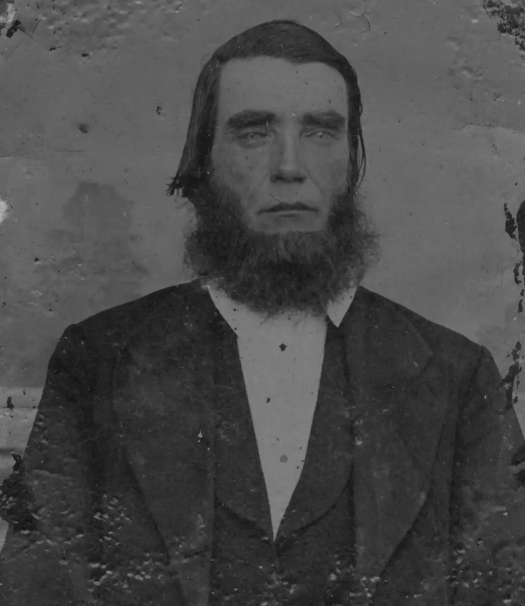

Home / Tin Types / tin000-00008
tin000-00008
← Return to Tin Types
← tin000-00007 tin000-00009 →
Unknown tin type man who looks slightly dead. I got an email from Donna G. Smith who thinks this might be a younger Samuel Walker Brown, taken at the same time as tin000-00003 (Mary Jane Joyce Brown), although I'm not sure I agree with that assessment.

Actual size: 1.65" × 1.91" · Scanned at: 1200 dpi · 4.54 MP (1984×2286) · Image date: 5 Jul 2005 · Comment date: 2 Jan 2008
Copyright © 2005–2026 Thomas Krehbiel. Images are freely distributable for personal use. For more information about these images contact Thomas Krehbiel (tkrehbiel@gmail.com).
Photos were scanned at either 300dpi or 600dpi, depending on the quality of the photograph. Slides were scanned at 1800dpi. Documents were scanned at 100dpi or 150dpi. Photoshop enhancements: most images have had their contrast improved. Some color photos were corrected to restore color balance. Some blurry images were mildly sharpened. Occasionally dust, scratches, and blemishes were removed digitally.
{kind=link}